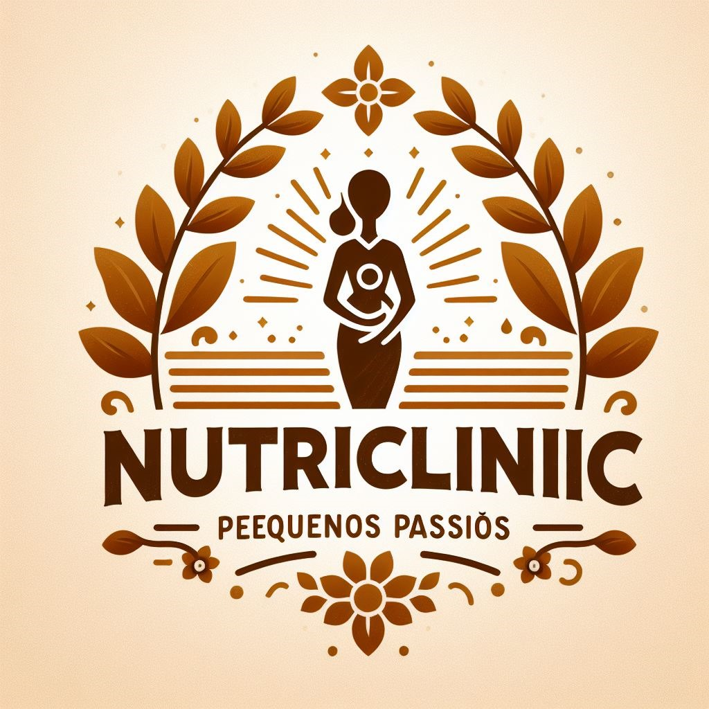
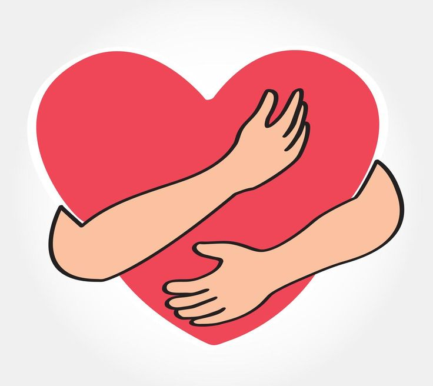

Giovanna Brunetti, 22 anos e Milena Schirley Medeiros, 23 anos.
Formadas pela PUCPR em 2024, Pós graduadas em Nutrição Materno infantil em 2025, tendo experiências individuais isoladas, focadas em: gestação, puerpério, fertilidade, amamentação, introdução alimentar, TEA, vegetarianismo e idosos. Além disso, colaboradoras de um projeto de frequência alimentar em universidades do Brasil, apresentado no CONBRAN (Congresso Brasileiro de Nutrição) - o maior evento da área de nutrição no Brasil organizado pela Associação Brasileira de Nutrição (ASBRAN), ele reúne profissionais, pesquisadores, estudantes e outros interessados em nutrição para discutir temas relevantes e atualizados relacionados à saúde, alimentação e bem-estar.
Buscamos além de nossa formação, sermos pessoas melhores e trocar experiências com nossos pacientes, em busca de uma parceria unificada e respeitosa acima de tudo, sempre aprendendo com nossos pacientes e priorizando um relacionamento ético.
Na nossa clínica, acreditamos que a nutrição vai muito além de simplesmente oferecer um plano alimentar; ela é uma ferramenta poderosa para transformar vidas e construir um futuro mais saudável. Nosso principal objetivo é ajudar gestantes, crianças, adolescentes e suas famílias a encontrar o equilíbrio por meio de uma alimentação adequada e hábitos saudáveis que perdurem por toda a vida.
O trabalho começa desde cedo, promovendo uma educação alimentar positiva e cativante. Queremos que as crianças cresçam em lares onde a alimentação saudável seja valorizada, compreendida e incorporada de forma natural. Sabemos que hábitos alimentares são ensinados pelo exemplo, e, por isso, o envolvimento de toda a família é primordial. Atuamos de maneira integrada, orientando não apenas a criança, mas também os pais e responsáveis, para que juntos possam construir um ambiente que favoreça escolhas alimentares conscientes e sustentáveis.
Além disso, reconhecemos que cada criança tem suas particularidades e que aspectos emocionais e comportamentais influenciam diretamente sua relação com a comida. Por isso, buscamos compreender a fundo o perfil psicológico de cada criança e adolescente que atendemos, especialmente aquelas que enfrentam desafios como TDAH, TEA e outras particularidades. Nossa abordagem inclui estratégias adaptadas para acolher e engajar essas crianças no processo de reeducação alimentar, ajudando-as a avançar na aceitação de uma alimentação saudável de forma respeitosa, gradual e acolhedora. .
Nosso compromisso vai além da saúde física; buscamos formar indivíduos mais autônomos e engajados com o próprio bem-estar. Incentivamos o desenvolvimento de habilidades culinárias desde cedo, mostrando que cozinhar é um ato de cuidado e amor consigo e com o próximo. Também trabalhamos para diminuir o tempo excessivo em telas, motivando crianças e adolescentes a explorar o mundo real, a descobrir o prazer de preparar os próprios alimentos e a se conectar com momentos simples, mas essenciais.
Nosso trabalho é fundamentado na prevenção. Queremos evitar o surgimento de doenças que aparecem de forma precoce e cada vez mais agressiva, como obesidade, diabetes e hipertensão. Para isso, fornecemos às famílias a “fórmula” essencial: conhecimento, prática e motivação para manterem a saúde e o bem-estar no longo prazo.
Nosso atendimento é totalmente personalizado, acolhendo não apenas a criança, mas também seus pais e responsáveis. Valorizamos o papel da família nesse processo e orientamos cada membro para que todos possam contribuir e se beneficiar da mudança. Acreditamos que transformar a alimentação é um passo fundamental para fortalecer os laços familiares, criando lares mais felizes, harmoniosos e saudáveis.
Nosso propósito é claro: formar gerações mais saudáveis, conscientes e felizes, transformando lares e, consequentemente, o mundo em um lugar melhor.

Atendemos tanto online quanto de forma física, será uma escolha do paciente, seja retorno ou não. Sempre antes das nossas consultas é necessário preencher um formulário para sabermos informações prévias sobre nossos pacientes, facilitando o atendimento. Demais exames podem ser solicitados também, portanto fique atento após agendar sua consulta!
Agendar Consulta